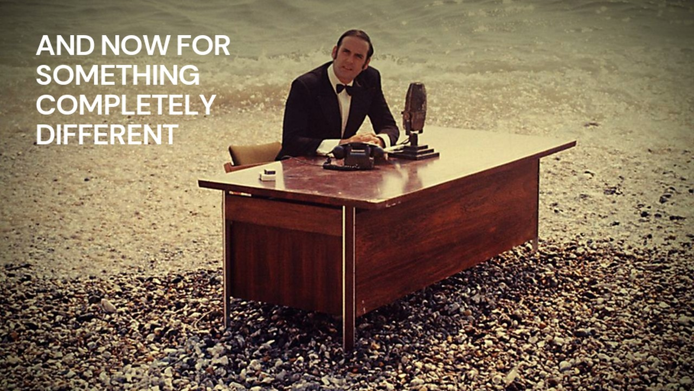
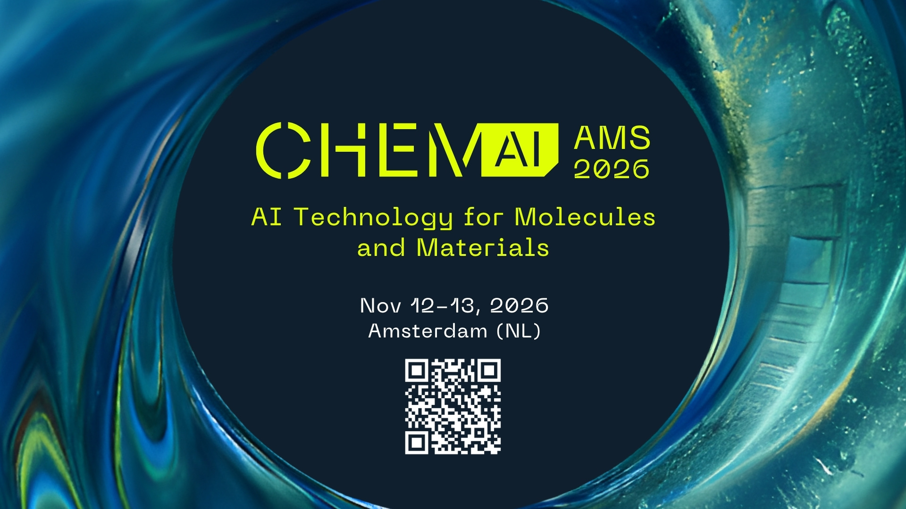

This is up as the room comes in and sits down. Do not advance past it until you actually start. It earns a laugh from about half the room and quietly tells the other half that the next forty minutes are not a vendor keynote.
"Right — and now for something completely different."
Then advance straight to the title. Do not explain the joke, and do not add a second one. The whole value of this slide is that it costs three seconds and changes the temperature of the room before you have said anything substantive.
If the audience skews younger than the reference, it still works — a man at an office desk on a beach is funny without the footnote, and it is a decent visual for a talk about infrastructure in the wrong place.
Cloud Native Groningen · September 2026
Beyond the Clouds
Sovereign AI infrastructure, and what it actually takes to build it — gateways, routing, GPUs and the memory budget.
Timing target: 33 min of content, 10–12 min of questions, 45 hard stop. This is the technical cut: the argument is the same as the leadership version, sections 01–02 are compressed, and section 03 goes down the stack one layer at a time.
"I build AI infrastructure for a living. Today I want to argue that the most important AI decision you'll make this year isn't which model — it's whose jurisdiction you run it in."
Set the contract early: "I'll talk for about thirty-three minutes, then I want your questions for ten. There's a slide at the end with five things I think are true and you might not."
Before we start
How this session works
- 01About thirty-three minutes of meTwelve of them are the stack, layer by layer, with YAML on the screen. The rest is why it matters.
- 02Interrupt me on factsIf a flag is wrong, a version is stale or a number doesn't match what you run, say so in the moment.
- 03Save the argumentsThere is a slide at the end with five things I believe and you might not. That is where the last ten minutes go.
Hard stop at 45. Every slide with code on it has the source in the footer, and the deck URL is on the last slide.
Twenty seconds. The contract matters less with an engineering audience than with a leadership one — they will interrupt without a licence — but the hard stop matters more, because the technical slides invite rabbit-holes.
"Thirty-three minutes, then questions. Interrupt me on facts — a wrong flag, a stale version — right away. Save the arguments for the end; there's a slide for that."
If the organisers gave a hard stop, say the actual clock time out loud here.
Could you move your AI workloads to another provider in ninety days?
Show of hands — then keep them up if you've tested it
Do the show of hands. Wait for it. Roughly a third go up on the first question; almost none stay up on the second. That gap is the talk.
"Right. So most of us believe we could. Almost none of us have proved it. In every other part of the business we'd call that an untested disaster recovery plan."
"Just use the API" was never an architecture decision. It was a procurement decision that quietly outsourced your jurisdiction.
The thesis of this talkLand this slowly. The word that does the work is jurisdiction — not "data", not "privacy". Everyone in this room already owns an untested failover somewhere — this is that, with a legal system attached.
"Nobody signed off on a foreign-policy exposure. Somebody signed off on a credit card and a rate limit. Those turned out to be the same decision."
The ground moved
Four things changed between your last AI budget cycle and this one. None of them were announced by your vendor.
Section is ~5 min. Purpose: establish that this is not a philosophical debate about sovereignty, it's a live risk register update. Facts only, no advocacy yet.
Start with where you actually are
European cloud providers' share of their own home market, against everyone else's. The market grew sixfold. Their share of it halved.
The plateau is the uncomfortable part. Three years of sovereignty debate, a €74bn market growing 24% a year, and the European share has not moved off 15%. Rhetoric did not shift a single point of it.
Synergy Research Group, July 2025 · European cloud infrastructure services, share of the European market
Forty-five seconds. This is the baseline the whole talk sits on, and it is the slide that makes the room uncomfortable in the right way. Do not editorialise — the two numbers do it.
"Before anything else, here is where we are. In 2017 European providers had twenty-nine percent of their own market. Today it's fifteen, and it has been fifteen for three years. The market grew sixfold in that time — the share halved."
The plateau matters more than the decline. Anyone can dismiss a decline as the past. A plateau through the loudest three years of sovereignty rhetoric in European history says the talking is not working, which sets up the "procurement, not manifestos" line later.
If challenged on the definition: this is Synergy's cloud infrastructure services measure, European providers' share of the European market. The complement is not all US — but it is overwhelmingly US, and the next slide shows it.
Three companies, seventy percent
Amazon, Microsoft and Google together hold roughly 70% of the European cloud market. No European provider holds more than two.
Synergy Research Group, July 2025 · European cloud infrastructure services
There is no European hyperscaler waiting to take the workload. That is the real problem with "just move to a European provider" — and it is exactly why the rest of this talk is about owning a control plane rather than running a migration.
Twenty seconds, and only one line. The previous slide gave them the trend; this one gives them the concentration. Point at the 2%.
"Seventy percent of the European cloud market is three American companies. No European provider is above two percent. When people say 'just move to a European alternative', that is the alternative they are talking about."
This is the slide that makes the jurisdiction argument concrete rather than theoretical. It also pre-empts the naive version of the answer — there is no European hyperscaler waiting to take the workload, which is exactly why the talk is about control planes and per-workload decisions rather than a single migration.
Cut this one before the previous one if you need to lose a slide. The trend carries more weight than the split.
We cannot guarantee that French citizens' data will not be handed to US authorities without their consent.”Anton Carniaux, Director of Public & Legal Affairs, Microsoft France — under oath, French Senate inquiry into digital sovereignty, 21 July 2025. Microsoft's technical director added that a contractual guarantee keeps EU customer data in the EU. A contract is not a jurisdiction.
The single most useful slide in the deck for this audience. It is not an activist claim — it's sworn testimony from the vendor most of this room already buys from.
Be scrupulously fair: he also said it had never actually happened, and Microsoft has since strengthened its EU Data Boundary. The point is not that Microsoft is untrustworthy. The point is structural: no US-parented company can contract its way out of the CLOUD Act.
"This is the vendor's own lawyer, under oath. Nobody is accusing anyone of anything. He's describing the structure of the problem more honestly than most of us do in our own risk registers."
Four dates that changed the calculus
- 21 JUL 2025Microsoft France testifies
Cannot guarantee EU data is beyond US reach. Contractual, not jurisdictional.
- 15 JAN 2026AWS European Sovereign Cloud goes live
€7.8bn, Brandenburg, EU-incorporated parent, EU-resident operators. The hyperscalers concede the premise.
- 29 JUN 2026Trump v. Slaughter
US Supreme Court removes for-cause protection for FTC commissioners — the independence the adequacy decision relied on.
- 31 JUL 2026EDPB writes to the Commission
Asks it to assess whether the FTC can still uphold Data Privacy Framework commitments. A review, not a revocation — yet.
Walk it left to right in about 90 seconds. The arc: the vendor admitted it → the vendors responded to it → the legal ground under the response moved anyway.
On AWS: this is genuinely a serious offer, and note what it concedes. €7.8bn is not a marketing budget. If sovereignty were a fringe European anxiety, they would not have built a separate legal entity for it.
On Slaughter/EDPB: the General Court upheld the Data Privacy Framework in September 2025 (the Latombe case). Transfers are lawful today. But the adequacy decision explicitly leaned on FTC independence, and that premise is now contested. Schrems III is a question of when, not whether.
"Twice in ten years, the legal basis for transatlantic data transfer has been struck down — Safe Harbour in 2015, Privacy Shield in 2020. If your AI architecture assumes it survives a third challenge, that's a bet, not a plan."
And the AI Act deadline you were braced for — moved
The Digital AI Omnibus, agreed May 2026, deferred the high-risk regime. Read what it did not defer.
- Deferred → Dec 2027Annex III high-risk obligations, originally 2 Aug 2026. Annex I embedded systems slip to Aug 2028.
- In force nowArticle 5 prohibitions. GPAI model obligations (Art. 51–56) — untouched by the omnibus.
- In force nowArticle 50 transparency for AI-generated content; grace for existing systems ends 2 Dec 2026.
- UnchangedPenalties up to €35m or 7% of global turnover. The AI Office gained inspection powers.
Anticipate the room's reaction: half of them read "delay" in the press and quietly deprioritised the programme. Correct that gently.
"Deferred is not cancelled. And the deferral bought you eighteen months on the paperwork — it bought you nothing on the architecture, because the architecture takes longer than the paperwork."
Key leadership framing: the omnibus moved a compliance deadline. It did not move a capability deadline. You cannot procure explainability, audit trails, and model lineage in the last quarter before an inspection.
The rulebook is already written — and it doesn't move at headline speed
Six European laws now touch how you run AI. One of them is quietly about to make leaving your cloud provider free.
Nothing on this chart is a proposal. Every bar is law that has already been adopted.
Ninety seconds. Do not read the chart. Point at three things: the red line is today, everything left of it already binds you, and the single black pin on the Data Act row is the one that changes your negotiating position.
"Every conversation I have about sovereignty starts with someone saying 'let's wait and see what Brussels does'. Brussels already did it. This is the past, not the future."
The Data Act pin is the slide's payload. From 12 January 2027 a cloud provider may not charge you to leave — no switching fee, no egress fee. The thing that has locked most organisations in for a decade is being legislated to zero, in sixteen months. If your exit was uneconomic, it is about to stop being uneconomic. That is a procurement lever, and it expires as a novelty the moment everyone notices.
If asked about the AI Act pins: prohibitions since Feb 2025, GPAI obligations since Aug 2025, transparency grace ends 2 Dec 2026, high-risk deferred to Dec 2027 by the omnibus. Say it once, don't dwell.
of organisations now factor an AI vendor's country of origin into selection decisions
Deloitte, State of AI in the Enterprise 2026 · n=3,235 · 24 countries
This slide exists to tell the room they are not outliers. Nearly 60% in the same study say they build primarily with local vendors.
Two supporting numbers, say them, don't slide them: Broadcom's 2026 private cloud study has public cloud as the primary inference environment falling from 56% to 41% in a single year. Cloudian has 93% of enterprises repatriating, in-process, or evaluating.
"Whatever you think about sovereignty as a principle, it has already become a procurement criterion. Your customers are about to start asking you this question, if they haven't."
This is no longer a minority position
Five numbers from five separate 2026 surveys. None of them were commissioned by anyone selling sovereignty.
The last bar is the only one moving downwards. It is also the only one about where the money goes.
Do not read all five. Read the top one and the bottom one, and let the shape do the rest.
"Ninety-three percent. Whatever you think of sovereignty as a principle, the market has already voted, and it voted with procurement forms rather than manifestos."
The bottom bar is the important one because it is a delta, not a level. Fifteen points of primary inference workload left public cloud in a single year. That is not ideology, that is a bill someone read.
If challenged on survey quality — fair challenge, take it seriously: these are vendor-adjacent surveys with self-selected samples. Answer honestly: "Every one of these has a house bias. That's exactly why I'm showing you five from five different houses that all point the same direction."
Sovereignty is a dial, not a switch
The unproductive version of this debate is "cloud or on-prem". The productive version is "which level, for which workload, at what price".
Section ~5 min. This is the reframe that makes the rest of the talk actionable, and it's the part most likely to change what someone does on Monday.
The scale itself: SEAL 0 to 4
Sovereignty Effective Assurance Levels. Five rungs, scored across eight dimensions — legal, operational, supply chain, technological openness, security, environmental — and totalled into one comparable sovereignty score. They do not say a provider is good or bad. They say how much of your control is contractual and how much is structural.
April 2026 · €180m awarded to Post Telecom, STACKIT, Scaleway and Proximus — most at SEAL-3, Proximus at SEAL-2. No hyperscaler bid at SEAL-3.
Ninety seconds, one rung per click. Do not read all five — read 0, 2 and 3, and let them see the bars grow. The whole slide exists so that "how sovereign are you?" becomes a number a supplier has to write down.
"Stop arguing about whether you're sovereign. There's a five-point scale, the Commission scores suppliers against it across eight dimensions, and it just spent a hundred and eighty million euros using it. Pick a number per workload, write it into the requirement, and make suppliers answer it. That's a procurement problem, and you already know how to run those."
The gap between 2 and 3 is the whole talk. SEAL-2 is what a contract can buy you — it fails the moment a foreign court instructs the parent company. SEAL-3 is what an architecture buys you. That is the same distinction as the Microsoft testimony on slide 9, expressed as a procurement level.
If someone challenges SEAL-4 as unachievable: agree immediately, without hedging. Nothing operates there at scale, and that is precisely why the EU is funding gigafactories. Conceding it costs you nothing and buys you the rest of the argument.
Worth saying out loud: no hyperscaler bid at SEAL-3. They bid, and they landed lower. That is not an accusation, it is the structure of the thing.
Four questions, asked per workload — not per company
- JurisdictionWhich court can compel this data, and who is legally capable of refusing? Not "where is the region".
- PortabilityIf the price triples or the model is deprecated on Friday, what is the actual cost of leaving? Measure it in weeks.
- EconomicsAt your real utilisation, not your peak slide — where does the crossover sit?
- CapabilityIf this becomes core to the business, do you want to be able to build it, or only to buy it?
The load-bearing word is per workload. Your marketing copy generator and your claims-adjudication model do not deserve the same answer, and a company-wide "AI policy" that gives them the same answer is how you end up over-paying and under-protected simultaneously.
"Most organisations have one AI policy and forty AI workloads. That's the mistake. Sovereignty is a per-workload property, like data classification — and you already classify data."
What actually changes when you own the control plane
- Capability arrives in days
- Cost scales with success, forever
- Model deprecated on the vendor's schedule
- Audit trail is whatever the vendor exports
- Terms of service change without your consent
- Zero infrastructure headcount
- Capability arrives in weeks, once
- Cost is a fixed floor plus marginal compute
- You choose when a model retires
- Every prompt, retrieval and response is yours to log
- Terms change when you change them
- Real platform engineering, hired and retained
Do not let the right column look free. Read the last line of each column aloud, deliberately. That is the honest trade and the room will trust everything after it more.
"The right-hand column is not better. It's different, and it's yours. Anyone who tells you the right column has no cost is selling you the right column."
Three answers to "who decides the roadmap?"
Sovereignty is not only about where the servers sit. It is about who governs the thing you depend on — and the world has three working answers to that, not one.
US model
Platform control
GitHub · PyPI · npm
- The forge, the registry and the package index are US-hosted chokepoints
- Sanctions become instant service denial, with no recourse and no notice
- Open code, closed platform. Ownership of the commons by ownership of the plumbing
China model
Domestic forks
Gitee · OpenAtom · OpenHarmony
- A national mirror of the whole stack, built as a response to sanctions
- It works — and it costs you interoperability and shared visibility
- Two ecosystems that no longer read each other's code
European path
Interdependent autonomy
Sovereign Cloud Stack · GAIA-X · Digital Commons EDIC
- Not isolation — strategic participation, and influence over the roadmap
- Sit on the boards, fund the maintainers, hold the standards
- Open governance beats ownership, and it is far cheaper
The third column is the awkward one — and it is the right one. Forking Europe out of the global commons would cost as much as staying captured by it. The lever is governance, not ownership.
Sixty seconds. This slide answers the objection you will otherwise get in the debate — "isn't sovereignty just protectionism?" Show them there is a third column, and that it is the one Europe is actually funding.
"There are three ways to answer 'who decides the roadmap'. America owns the platform. China built its own copy. Europe's bet is that you can stay in the commons and still have a vote — which is the only one of the three that doesn't require you to be a superpower."
The middle card is not a cheap shot at China. It is genuinely effective and genuinely costly, and saying so plainly is what earns you the right to argue for the third column.
Links to provocation #1 on the debate slide. If someone wants the protectionism fight, this is the slide to come back to.
The stack is ready — that's the news
Three years ago this argument failed on engineering grounds. It doesn't any more, and that's the part the room probably hasn't been told.
Section ~5 min. Energy shift: sections 1–2 were risk, this is opportunity. Change your voice here.
AI infrastructure became boring. Boring is the achievement.
- 66%of organisations serving generative AI models already run inference on Kubernetes. This is the mainstream, not the fringe.
- 31 certified platformsunder the CNCF Kubernetes AI Conformance programme as of March 2026 — up from 18 in November 2025.
- Portability is now testableConformance covers disaggregated inference, inference ingress, GPU-aware scheduling. Portable means certified portable.
- The hard parts got donatedllm-d — Red Hat, Google, IBM, NVIDIA, CoreWeave — entered the CNCF in March 2026, v0.9 in August. Prefill/decode disaggregation, KV-cache-aware routing, wide expert parallelism: open, and on the next slides.
Translate every term. "Disaggregated inference" = the expensive trick that makes GPUs 2–3× more efficient, which used to be proprietary and now isn't.
"The reason I can stand here and make this argument in 2026, when I couldn't in 2023, is that the difficult engineering has been commoditised — by the people selling the alternative. That is unusual, and it's the window."
If challenged on maturity: llm-d benchmarks around 120k tokens/sec on 16 H100s with Qwen3-32B. Real numbers, open code, reproducible.
"Open weights" is not the same thing as an open model
The substrate is solved. The model layer is not — and the word "open" is doing a great deal of work in vendor marketing right now. There are three tiers, and only one of them survives the sovereignty test.
Tier 1
Closed APIs
GPT-5 · Claude · Gemini
- No inspection, no control, no say in when it is retired
- The vendor holds the pricing power and the terms of service
- Genuinely the best capability available — that is why it is tempting
Tier 2
Open weights
Llama 4 · DeepSeek R1
- You can read and run the weights — a real improvement
- But: licence restrictions, no training-data audit, geopolitical entanglements
- Portable, not accountable. Enough for lock-in, not enough for an AI Act file
Tier 3
Actually open
OpenEuroLLM · Mistral + EU infrastructure
- Inspectable, forkable, and deployable on infrastructure you control
- The only tier where you can answer an auditor without phoning a vendor
- Behind the frontier today — and closing, which is the whole bet
The question to ask any supplier: is a model "open" if you can read the weights but cannot audit the training data, verify the alignment, or run it without GPU capacity you do not control?
This is the honesty beat inside the good-news section. The previous slide said the stack is ready; this one says the model layer is the part that genuinely is not, and you would rather they heard that from you than from a vendor.
"Everybody in this room has been told they can have an open model. Read the middle card. You can download the weights, you cannot audit what went into them, and the licence still tells you what you may build. That's portable — it isn't accountable."
Ties directly to the workload table later: rent the frontier knowingly, through your own gateway. This slide is why "knowingly" is in that sentence.
If challenged that tier 3 is behind: agree, immediately and without hedging. Then note that tier 3 is the only one you can put in front of a regulator without a vendor on the call.
Don't take my word for it — take theirs
In March, KubeCon Europe brought the cloud-native industry to the RAI, twenty minutes from this room. This is a sample of what it spent the week on. Note who is presenting: not activists, not startups.
- Building a Sovereign, Multi-Cloud Strategy with Cloud Native Technologies Goetz Reinhaeckel, Program Director Cloud — BWI, the IT company of the German armed forces. Main-stage keynote
- Inference and Sovereign AI: Scaling Cloud Native AI with Control and Compliance Karena Angell, Technical Strategist; Vincent Caldeira, CTO APAC — Red Hat. Sponsored keynote
- Towards Building an Open Source AI Reference Stack for EU Sovereign Cloud Madhav Bhargava, SAP Labs; Sanjay Chatterjee, NVIDIA. Europe's largest software company and the company selling the chips — building the open alternative together
- Virtualizing Large-Scale GPU Cluster for Sovereign AI Jian Li — SK Telecom, on the Petasus AI Cloud. A national telco doing exactly this, at scale, outside Europe
- Sovereign Identities for Your Cloud Native Architecture Alexander Schwartz, IBM; Sebastian Laskawiec, Defense Unicorns. Who your systems believe you are is also a sovereignty question
- EU Cloud Sovereignty Framework Explained Emiel Brok, SUSE — the SEAL levels, in practice. Co-located event · the framework from slide 16, unpacked
- Running a Sovereign Cloud Stack Cluster for the ITU: Lessons Learned Martin Pilka, dNation; Karsten Samaschke, VanillaCore. The UN's telecoms agency, in production, with the lessons written down
Fifteen seconds of delivery, then move. This slide is not read aloud — it is shown. Its entire job is to convert "this is one consultant's opinion" into "this is where the industry already is".
"KubeCon Europe was at the RAI in March — twenty thousand engineers, twenty minutes from here. These are seven sessions from that week. SAP. NVIDIA. IBM. Red Hat. The German armed forces. The United Nations' telecoms agency. Nobody on this slide is a European sovereignty activist. They are all just shipping."
The two to name if you name any: BWI, because a defence IT provider building on cloud-native rather than a closed national stack is the strongest possible signal that this is achievable; and SAP with NVIDIA, because the vendor everyone assumes has the most to lose from an open sovereign stack is co-authoring one.
Every title is a live link in the shared deck. Offer that — several people will want to send one to a colleague.
The reference architecture — every layer open, every layer replaceable
OCI images
Gateway API
OpenAI-compatible API
MCP · A2A
S3 API
Open weights
Every boundary is a standard, so every layer is an exit.
Model registry
Eval harness
Prompt, tool & response lineage
Immutable audit log
The AI Act evidence layer. Build it first, not last.
Eight layers, three of them new since 2024: the agent gateway, inference routing, and fractional GPU scheduling. The next six slides go down them.
60 seconds — this is the map for the next six slides, not a slide to read. The leadership cut had one "gateway" layer; this cut splits it into policy (who may call what) and placement (which replica answers), because those are two different projects with two different failure modes.
"There is nothing exotic here. Every box is open, documented, and someone else's problem to maintain. What's new since I last drew this is the three layers in the middle: an agent gateway that understands MCP, an inference router that understands the KV cache, and a scheduler that hands out fractions of a card. Each of those was a proprietary advantage eighteen months ago."
Point at exactly three things: the two gateway layers (the highest-leverage thing to own), the data layer (the moat nobody should rent), and the bottom layer (the thing you cannot download, which is why the build-out slides follow).
If asked what I would actually run on one box: K3s, host-installed driver, GPU Operator for the plugin and DCGM, HAMi for sharing, vLLM at TP 4 with FP8 weights and KV, kgateway with agentgateway, an InferencePool over the vLLM pods. That is the "smallest sovereign unit" slide later.
One request, four hops — and you own the middle two
The layers you actually have to run to be sovereign are the ones where decisions get made about a request: who may call what, and which GPU answers. Both are now standard Kubernetes APIs with more than one implementation.
1 · Caller
Agent or app
OpenAI-compatible client · MCP client · A2A peer
- Talks to one hostname, forever
- Never learns which model, vendor or GPU answered
- That ignorance is the portability
2 · Policy
Agent gateway
agentgateway · Envoy AI Gateway · kgateway
- AuthN/Z on every hop: JWT, OIDC, API key, SPIFFE
- Tool-level RBAC for MCP, guardrails on prompts and tool calls
- Token budgets, redaction, cost per request, OTel by default
→ frontier API, knowingly
→ InferencePool, by default
3 · Placement
Inference gateway
Gateway API Inference Extension · EPP via ext-proc
InferencePoolreplaces the Service- Endpoint Picker scores every replica per request
- Priority and flow control when the pool is saturated
queue depth · KV-cache utilisation
prefix-cache hit · LoRA loaded · predicted latency
4 · Tokens
Model servers
vLLM · SGLang · llm-d well-lit paths
- Prefill and decode on separate pods when it pays
- KV blocks shipped over NIXL, tiered by LMCache
- Metrics scraped straight into hop 3
vllm:num_requests_waiting
vllm:gpu_cache_usage_perc
This is the technical spine of the talk — 90 seconds. The non-technical version had one "gateway" box; this room deserves to see that it is two different problems solved by two different projects, and that both are Kubernetes APIs now rather than products.
"Hop two decides whether a request may happen and what it may touch. Hop three decides where it runs. Own those two and it genuinely does not matter whether hop four is a B300 in Amsterdam or a frontier API in Virginia — the caller cannot tell, and neither can the audit log."
The signals list on hop three is the whole reason a Service or a plain L7 balancer is wrong for LLMs: the expensive state is on the GPU, and round-robin cannot see it. The next three slides go down one hop at a time: the inference extension, agentgateway, then llm-d.
If someone asks "why not just Istio": Istio implements the inference extension too. The point is the API, not the proxy.
Gateway API Inference Extension: a Service that can see the KV cache
A Service load-balances connections. An InferencePool load-balances requests, using what the model servers report about themselves. It is a Kubernetes SIG project, at v1.6, with five gateways implementing it.
- The mechanismThe gateway calls an Endpoint Picker over Envoy's external-processing protocol on every request. The EPP scrapes each replica's metrics and returns one pod. Any gateway that speaks Gateway API and ext-proc can be an inference gateway.
- The scorersQueue depth, KV-cache utilisation, prefix-cache affinity, which LoRA adapters are resident, and (in llm-d's EPP) a predicted-latency model. The signals are vLLM's own Prometheus metrics — nothing proprietary.
- Who implements itEnvoy Gateway, kgateway, Istio, agentgateway and GKE Inference Gateway. Same YAML on all five: that is what makes it an exit, not a feature.
- Where it wentSince v1.6 (August 2026) the full EPP, body-based routing and the latency predictor live in the llm-d repo; the SIG keeps the spec, the conformance suite and a lightweight reference EPP. Spec and implementation are now separately owned.
# the pool replaces a Service; the EPP is the brain apiVersion: inference.networking.k8s.io/v1 kind: InferencePool metadata: {name: llama-70b} spec: selector: {app: vllm-llama-70b} targetPorts: [{number: 8000}] endpointPickerRef: # optional since v1.6 name: llama-70b-epp port: {number: 9002} --- apiVersion: gateway.networking.k8s.io/v1 kind: HTTPRoute metadata: {name: llm} spec: parentRefs: [{name: inference-gateway}] rules: - matches: [{path: {value: /v1}}] backendRefs: - group: inference.networking.k8s.io kind: InferencePool name: llama-70b
kubernetes.io/blog · 5 June 2025 · gateway-api-inference-extension.sigs.k8s.io · v1.6.0, 17 August 2026
Two minutes. The YAML is on the slide so the room can see it is boring: an HTTPRoute whose backend is a pool instead of a Service. That is the entire migration for the application team.
"The reason a Service is the wrong abstraction for an LLM is that the expensive state lives on the GPU. Two replicas with the same weights are not interchangeable — one of them already has your prefix in its KV cache. A round-robin balancer can't know that. The endpoint picker can, because vLLM tells it."
Metric names to say out loud if asked: vllm:num_requests_waiting, vllm:gpu_cache_usage_perc, vllm:lora_requests_info. That is the whole contract between hop 3 and hop 4.
On sovereignty: the pool is where you decide that a request tagged "regulated" may only land on the EU-resident pool, and the frontier API is a separate backend the gateway routes to explicitly. The routing decision is in YAML in your repo, not in a vendor console.
If challenged on the v1.6 EPP move: yes, it means the production-grade EPP is llm-d's now. That is healthier than it sounds — the SIG owns the conformance tests, so any EPP must pass the same suite.
agentgateway: the policy hop, once agents start calling tools
An LLM gateway that only proxies chat completions is already behind. Agents speak MCP to tools and A2A to each other, and those calls face the same audit question as the model call: who did what, with what, and who allowed it.
- One data plane, three protocolsOpenAI-compatible LLM traffic to every major provider, MCP over stdio / HTTP / SSE / streamable HTTP, A2A between agents — plus plain HTTP, gRPC and TCP. Rust, one binary.
- Policy on every hopJWT, OIDC, API keys, OAuth token exchange, SPIFFE workload identities. RBAC down to the individual MCP tool, written in CEL.
- Governance you can show a regulatorGuardrails on prompts and tool calls, prompt redaction, per-key token budgets, realised cost per request, OpenTelemetry by default.
- It plugs into hop threeRoutes to self-hosted models through the Inference Extension, so one gateway fronts the B300 pool and the frontier API. Control plane: kgateway, via Gateway API.
- Not a vendor productDonated by Solo.io to the Linux Foundation's Agentic AI Foundation. v1.5.0 on 27 August 2026, with the July 2026 MCP specification.
# one gateway, two backends, one audit log gateways: - name: ai listeners: [{port: 8080, protocol: HTTP}] routes: - match: {path: /v1} policies: jwtAuth: {issuer: https://sso.example.eu} promptGuard: {rejectPII: true} budget: {tokensPerDay: 5000000} backends: - inferencePool: {name: llama-70b} # EU, self-hosted - openai: {model: gpt-5} # rented, knowingly weight: 0 - match: {path: /mcp} policies: mcpAuthorization: allow: - tool: search_docs when: "jwt.groups.contains('analysts')" backends: - mcp: {targets: [docs-server, crm-server]}
agentgateway.dev · github.com/agentgateway/agentgateway · config shape is illustrative — check the v1.5 reference before you paste it
90 seconds. This is the slide that upgrades "put a gateway in front" from the leadership deck into something this room can deploy on Monday.
"Everyone in this room has a gateway in front of chat completions by now. Almost nobody has one in front of the tool calls — and the tool calls are where an agent actually does damage. MCP authorisation at the tool level is the control that did not exist a year ago."
The sovereignty angle is the second backend with weight zero: the frontier model is configured, reachable by explicit route, and every call to it lands in the same audit log as the local pool. That is "rent, knowingly" from the workload table, as YAML.
Be honest about the config block: it is illustrative of the shape (gateways → routes → policies → backends, the v1.4 model that replaced binds), not a paste-ready file. Field names move between minors; the reference docs are the source of truth.
If asked "why not Envoy AI Gateway": also fine, also implements the inference extension, CNCF-hosted. agentgateway's differentiator is MCP/A2A as first-class protocols and the Agentic AI Foundation home. Pick one, but pick one that speaks Gateway API.
llm-d: the serving layer, as three well-lit paths
Founded by Red Hat, Google Cloud, IBM Research, CoreWeave and NVIDIA; AMD, Cisco, Hugging Face, Intel, Lambda and Mistral AI joined. CNCF Sandbox since March 2026, v0.9 in August. Not a new engine — vLLM, plus the pieces that turn one engine into a fleet.
- Path 1 · Intelligent inference schedulingThe Inference Extension EPP with prefix-cache-aware and load-aware scoring, plus a latency predictor. Reported: 3× output throughput and 2× faster TTFT versus round-robin; 40% lower TTFT/ITL from predicted-latency scheduling.
- Path 2 · Prefill/decode disaggregationPrefill is compute-bound, decode is memory-bound; sharing a GPU wastes one of the two. Separate pools, KV blocks moved over NIXL. Reported: up to 70% more tokens per second.
- Path 3 · Wide expert parallelismMoE models like DeepSeek spread experts across many GPUs, so each holds fewer weights and more KV cache. Reported: 50k tokens/s cluster-wide on B200.
- Under all three · KV-cache managementLMCache tiers blocks to CPU and NVMe; a global indexer tells the scheduler where every prefix lives. Cache hits survive a pod restart, and routing becomes cache-aware instead of hopeful.
Two minutes. The slide before showed the routing hop; this is hop four. The framing that works for engineers is "vLLM plus the fleet problems": scheduling, disaggregation, cache.
"Every number on this slide is from the project's own benchmarks, so treat them as upper bounds. What matters is not the exact multiplier — it's that in 2024 every one of these tricks was proprietary, sitting inside a hyperscaler's serving stack, and today they are Helm charts with a conformance suite."
Operational facts worth having ready: v0.7 moved all CUDA images to CUDA 13, which needs driver 580 or newer — this bites people on older base images. v0.9 pins vLLM 0.26, adds router HA, and covers XPU, ROCm and TPU as well as CUDA — which is the "not single-vendor at the silicon layer either" point.
If asked "is this ready": Sandbox, not Incubating. Path 1 is production-grade and low-risk. Path 2 pays off only above a size — roughly, when you have enough replicas that specialising them beats the KV transfer cost. Path 3 is for MoE at scale. Most of this room should start and stop at path 1.
HBM is the budget. Weights are rent; the KV cache is what you actually sell.
One B300 has 288 GB of HBM3e. vLLM keeps 10% back by default, the model takes a fixed slice, and every remaining byte is KV cache — which is your concurrency. Shrinking the weights buys tokens in flight, not just a smaller download.
Two minutes, and this is the slide engineers photograph. The bars are arithmetic, not benchmarks: --gpu-memory-utilization 0.9 gives 259 GB; the reserve band is that 10% plus roughly 8 GB of activation/workspace that vLLM profiles at start-up; everything left is KV blocks in 16-token pages.
"Weights are rent — you pay it once per replica whether anyone is talking to the model or not. The KV cache is the inventory you actually sell: every token in flight lives there. So the interesting effect of quantisation isn't that the model is smaller, it's that the same card now holds three times as many conversations."
Worked numbers: Llama 70B is 163,840 KV values per token (2 × 80 layers × 8 KV heads × 128), so 320 KB in BF16 and 160 KB in FP8. At 8k context that is 40 sessions per B300 in the top row and roughly 140 in the third. At 128k it is 2–3 versus 8. That is the "how many users" answer for this room.
The whole-node row: DeepSeek-V3.2 ships FP8-native at about 685 GB on disk including the MTP head. Its multi-head latent attention compresses KV to about 70 KB per token — 61 layers × 576 latent dims × 2 bytes — which is why a 671B model has a smaller per-token cache than a 70B dense one. One 8×B300 box holds the weights with 1.3 TB left over. NVIDIA's NVFP4 checkpoint fits on two GPUs, so the same box runs four independent replicas if you would rather have blast-radius than context.
If challenged on FP8 KV quality: the vLLM team's April 2026 study measured at most 1–2 points on reasoning tasks and 97–98% recovery on long-context retrieval. Say the number, then say "measure it on your evals" — which is what § 05 is for.
The smallest sovereign unit: one 8×B300 box, K3s
You do not need a cluster to prove the argument. One HGX B300 node is 2.3 TB of HBM; K3s makes it a Kubernetes API with one binary and no etcd. The whole reference architecture fits on it, in an afternoon.
- The box8× B300 SXM, 288 GB HBM3e each, NVLink 5 + NVSwitch, 8× ConnectX-8. About 1,400 W per GPU: plan on 14 kW and liquid cooling. Local NVMe for weights — you will pull them more than once.
- The hostUbuntu 24.04, NVIDIA driver 580+ (CUDA 13; llm-d images need it since v0.7),
nvidia-container-toolkit. K3s detects the toolkit at start-up and writes thenvidiaruntime and RuntimeClass into its embedded containerd. - What you skipThe operator's driver and toolkit containers (host-installed), Traefik (you bring a gateway), a load balancer (ServiceLB is fine for one node). Keep the device plugin, DCGM exporter and GPU feature discovery.
- What you do not getAny HA. The box, its SQLite datastore and its grid connection are each the failure domain. Fine for proving a workload moves; not a production posture. The second box is where the megawatt slide starts to matter.
# 1 · one node, nvidia as default runtime, no Traefik curl -sfL https://get.k3s.io | sh -s - server \ --disable traefik --default-runtime nvidia # 2 · operator for plugin + DCGM + GFD; driver, toolkit stay on host helm install gpu-operator nvidia/gpu-operator -n gpu-operator \ --create-namespace --set driver.enabled=false \ --set toolkit.enabled=false # CDI is default since v25.10 # 3 · sharing policy (HAMi), or the long-run API (NVIDIA DRA driver) helm install hami hami-charts/hami -n kube-system # 4 · one model server, four cards, FP8 everything vllm serve meta-llama/Llama-3.3-70B-Instruct \ --tensor-parallel-size 4 --quantization fp8 --kv-cache-dtype fp8 \ --max-model-len 131072 --gpu-memory-utilization 0.9 # limits: nvidia.com/gpu: 4 # 5 · gateways: kgateway + agentgateway, InferencePool over the pods helm install kgateway oci://cr.kgateway.dev/kgateway-dev/charts/kgateway \ -n kgateway-system --set agentgateway.enabled=true kubectl apply -f inferencepool.yaml -f httproute.yaml -f agentgateway.yaml # other four cards: DeepSeek-V3.2-NVFP4 at -tp 2, twice. Or an eval fleet.
docs.k3s.io/advanced · NVIDIA GPU Operator v26.7 · project-hami.io · kgateway.dev · vllm.ai — verify chart names and flags against the versions you install
Two minutes, and slow down on step four. This is the slide that makes the talk concrete for an engineer: not "Europe is building gigafactories" but "here is the afternoon".
"K3s is the right tool here for the same reason it's the wrong tool for a datacentre: one binary, SQLite instead of etcd, containerd embedded. On one box that is exactly the amount of Kubernetes you need. The point isn't the box. The point is that once the workload runs behind a Gateway API route on this box, moving it to a European neocloud is a kubeconfig change."
Step 1: with the toolkit installed on the host, K3s picks it up and creates the nvidia RuntimeClass itself; --default-runtime nvidia means you never have to set runtimeClassName. With the operator on CDI (default since v25.10) you would not have to anyway — belt and braces.
Step 2: the operator's own docs cover RKE2 explicitly and K3s by the same pattern; if you let the operator manage the toolkit instead, point it at /run/k3s/containerd/containerd.sock and the K3s containerd config template. Host-installed is simpler and survives K3s upgrades.
Step 4 arithmetic is the memory slide: 70B FP8 at TP 4 leaves about 900 GB of KV across the four cards — roughly 5.5 million tokens in flight at FP8 KV. Nobody in this room needs more than that from one model on one box; if they think they do, they need a gateway and a second pool, not a bigger box. Prefix caching is on by default; chunked prefill too.
The last line is the punchline: half the node is spare. Two NVFP4 DeepSeek replicas, or an evaluation fleet that runs your regression suite every night — which is the failure mode ("model lifecycle is now your job") turned into a schedule.
If asked about power: 14 kW is one box. Four boxes is a 56 kW rack. That is why the section after this one is about megawatts and grid connections — nothing on this slide fits in an office.
The knobs, in the order you should turn them
All open, all in vLLM today; llm-d wires the last row across a fleet. No vendor required.
| Knob | How | Runs on | What you get · what it costs |
|---|---|---|---|
| Free defaultsturn on nothing | Prefix caching, chunked prefill, PagedAttention in 16-token blocks. Set --max-model-len honestly and --max-num-seqs to what the cache can hold. | any GPU | Most "we need more GPUs" tickets close here. Costs nothing but a look at the metrics. |
| FP8 weightsW8A8 | --quantization fp8, or a pre-quantised checkpoint. Native tensor-core path. | Hopper, Blackwell | Half the HBM, near-lossless. Should be the default for anything above 8B. |
| FP8 KV cache | --kv-cache-dtype fp8; skip sliding-window layers with --kv-cache-dtype-skip-layers. | FA3 on Hopper · FlashInfer on Blackwell | Per-token KV cost down to 54% of BF16; +14.9% throughput on Llama-3.1-8B; ≤1–2 pts on reasoning evals. Break-even ~4k tokens on B200. |
| NVFP4 / MXFP4 weights | NVIDIA *-NVFP4 checkpoints (ModelOpt); MXFP4 as shipped by gpt-oss. VLLM_USE_FLASHINFER_MOE_FP4=1 for MoE. | Blackwell only | Quarter the HBM. DeepSeek-V3.2 on two GB300s at 7,360 prefill tokens/GPU/s — 8× an H200. Calibrate before you trust it. |
| INT4 weight-onlyAWQ · GPTQ · compressed-tensors | Quantise yourself with LLM Compressor; load with --quantization compressed-tensors. | any GPU | Wins when decode-bound and memory-poor. Loses accuracy faster than FP8; run your evals, not the model card's. |
| Speculative decoding | EAGLE-3 draft heads; DeepSeek's MTP head via --speculative-config. | any GPU | Faster decode at low concurrency. Fades as the batch fills — an interactive-workload tool, not a throughput tool. |
| Across the fleetllm-d | P/D disaggregation over NIXL; KV tiering to CPU and NVMe with LMCache; cache-aware EPP routing. | multi-node | The 3× / 2× / 70% numbers from the llm-d slide. Complexity you should earn, not start with. |
Two minutes; do not read the table. Point at the first row and the last row. Everything in between is what you do when the first row is exhausted and before you deserve the last.
"The order matters. The first row is free and fixes most tickets. FP8 weights and FP8 KV are the two flags from the memory slide. Four-bit is where you start trading accuracy for money and need your own evals. And the bottom row is what a hyperscaler's serving team was doing for you — now it's a Helm chart, but it is still their job's worth of complexity."
Sources for the numbers: vLLM blog, "The State of FP8 KV-Cache and Attention Quantization", 22 April 2026; vLLM blog on DeepSeek-V3.2 on GB300, 13 February 2026 (vLLM v0.14.1, CUDA 13). The NVFP4 row's "calibrate" caveat is deliberate — the accuracy story for 4-bit KV is still moving.
On sovereignty, the point of this slide is quiet but real: every one of these is a flag on a model you hold, on a card you own, in a jurisdiction you chose. The optimisation frontier is open. There is no premium tier of vLLM.
The bottom layer is being poured
Every flag on the last three slides runs on a floor somebody has to build: megawatts, a grid connection, and a queue you cannot jump. That is the half of the stack Europe is pouring right now.
Section ~3 min. Register change, and the reason this divider exists: you have just spent ten minutes in HBM budgets and Helm charts. Slow down, drop the numbers, and zoom out to the physical layer. Make the VOLT disclosure here if you have not already.
And Europe is building the bottom layer right now
- 19 AI Factories, 13 antennasOperational across the EU today, EuroHPC-funded, accessible to industry and SMEs.
- Up to 7 AI Gigafactories>€20bn expected private investment. Bids close 12 November 2026, selection early 2027, operating within 18 months.
- €180m already committedCommission cloud procurement awarded to four European providers against the sovereignty framework, April 2026.
- The point for youSovereign capacity is becoming procurable. In 2023 the honest answer was "there's nowhere to go". That excuse is expiring.
Keep this factual and brief — this room does not need EU policy advocacy, they need to know the option exists.
"You don't have to have an opinion about industrial policy to notice that the supply side is arriving. The question stops being 'is there an alternative' and starts being 'have you evaluated one'."
The bottom layer, in megawatts
Announced and under construction in Europe. The unit that matters is not GPUs — it is grid connection, because that is the thing you cannot order faster.
€180m committed by the Commission · €7.8bn AWS European Sovereign Cloud · >€20bn expected across up to 7 EU AI Gigafactories
The visual argument is the gap between the bottom two bars and the top one. Do not explain it — let them see it, then say the line below.
"The bar at the bottom is live this month, twenty kilometres from this room. The bar at the top is the same company in 2027. That is a fifty-seven-fold step change in about eighteen months, and the constraint on it is not chips or capital. It is a grid connection."
Disclose again if you have not already: Lovelace Engineering consults for VOLT Datacenters, and it is in the byline on slide 2. Nebius is on the chart precisely so this is not a single-vendor slide.
The number to have ready if anyone asks what 800 MW means: roughly the draw of a small city, and roughly a fifth of the total contracted datacentre load in the Netherlands today. Grid congestion is why this is hard, and why the queue matters more than the cheque.
Cut this slide if you are short — the 800 MW metric slide that follows makes the same point in five seconds.
What it looks like when someone actually builds it here
VOLT — "from power to tokens" — is doing the full-stack version in the Netherlands. Worth knowing because it's twenty kilometres from this room, not because it's the only one.
- Dutch AI Cloud, operational October 2026Amsterdam, with NorthC Datacenters and Dell. 14 MW initially at Switch AMS4, 42 MW planned at AMS5.
- Rotterdam AI GigafactoryUp to 800 MW and roughly 250,000 GPUs, construction from 2027.
- Target sectorsFinance, healthcare, biotech, defence, government — precisely the workloads that cannot answer the jurisdiction question with a contract.
- The framing to stealHan de Groot: build AI factories so countries become "AI makers, not AI takers".
Disclose the relationship. Say plainly that Lovelace Engineering consults for VOLT Datacenters — the byline already says it, so say it out loud too. Credibility in this room is worth more than the plug, and disclosing costs nothing.
"Full disclosure — I work with these people. Which is also why I know the numbers are real and how hard the grid connection was."
Nebius is the useful contrast if asked: 310 MW in Lappeenranta, 240 MW near Lille, targeting 2.5 GW. Different model — hyperscale neocloud rather than full-stack sovereign.
Rotterdam, from 2027. Sovereignty is, in the end, a question about electricity.
VOLT AI Gigafactory · ~250,000 GPUs · construction begins 2027
Short beat. Use it to make the point that the constraint everyone ignores is grid capacity, and in the Netherlands specifically, grid congestion is the binding constraint on AI ambition — not talent, not capital.
"Every AI strategy in this country eventually becomes an energy strategy. The organisations that figure that out eighteen months early get the connection."
What the vendor keynote leaves out
If I only told you the good half, you'd make a bad decision and I'd deserve the blame.
Section ~4 min. This is the credibility section. Do not rush it, and do not soften it — the honesty is what makes the recommendation land.
Four failure modes nobody demos on stage
- GPU scheduling contentionOne team's training job starves everyone's inference. Fixable — quotas, gang scheduling, fair-share — but it is a political problem before it is a technical one. The technical half is the next slide.
- Cold startsProvisioning a scarce GPU: seconds to hours. Pulling a large image: 3–5 minutes. Then weights load. "Scale to zero" is a slide, not a capability.
- Capacity planning without an escape hatchNo elastic overflow. You size for peak, or you queue. Both cost money and one costs credibility.
- Model lifecycle is now your jobEvals, regressions, retirement. The vendor was doing unglamorous work you never saw an invoice for.
Say the quiet part: the first failure is organisational. GPU contention is a governance problem wearing a Kubernetes costume, and it lands on someone in this room, not on the platform team.
"I've watched a data science team and a product team fight over eight GPUs for six weeks. No technology fixed it. A quota policy and one uncomfortable meeting fixed it."
Mitigation to name if pressed: keep a federated burst path to a European neocloud so you own the steady state and rent the spikes. That's the hybrid answer and it's the right one for most of this room.
GPU contention, the technical half: slice the card
The quota policy fixes the politics. HAMi fixes the arithmetic: a pod asks for a fraction of a GPU by memory and by compute, and the runtime enforces it. CNCF Incubating since 15 July 2026.
- Four ways to share, one that isolates cheaplyTime-slicing: no memory limit. MPS: process-level, weak fault isolation. MIG: hard isolation, but fixed profiles, at most seven, only where the silicon has it. HAMi: software slicing with hard limits on any card, dynamic MIG where available.
- How it enforcesDevice plugin and scheduler extender in Kubernetes; a CUDA interposer (HAMi-core) in the pod caps memory and throttles kernel launches to the requested share. Zero application changes.
- Not only NVIDIAAscend, Cambricon, Hygon, Iluvatar, Kunlunxin, MetaX and Moore Threads under one API. In a talk about not depending on one supplier, a silicon-agnostic scheduler matters.
- Scale evidenceDaoCloud: more than 10,000 GPUs across ten-plus datacentres. China Merchants Bank in production. Binpack, spread and topology-aware policies.
# an embedder next to a 70B chat model, on one 288 GB B300 apiVersion: v1 kind: Pod metadata: name: embedder annotations: hami.io/gpu-scheduler-policy: binpack spec: containers: - name: vllm image: vllm/vllm-openai:v0.26.0 args: [--model, BAAI/bge-m3] resources: limits: nvidia.com/gpu: 1 # one virtual GPU nvidia.com/gpumem: 24000 # MiB, enforced nvidia.com/gpucores: 15 # % of SM time # the chat model asks for gpumem: 240000, gpucores: 80. # Same card. Neither can OOM the other.
github.com/Project-HAMi/HAMi · CNCF Sandbox Aug 2024 → Incubating Jul 2026 · v2.9 · DRA (GA in Kubernetes 1.34) is the long-run API; HAMi works with it today
90 seconds. This is the technical companion to the "GPU contention" failure mode on the previous slide. Say the politics line first, then this.
"The reason two teams fight over eight GPUs is that Kubernetes hands out GPUs as whole integers. An embedding model that needs 20 gigabytes gets a 288-gigabyte card and the other team gets nothing. HAMi lets the pod ask for 24 gigabytes and 15 per cent of the SMs, and enforces it in the CUDA layer. The fight goes away because the scarcity was mostly fake."
Honest caveats: the isolation is software, so it is a trust boundary within an organisation, not between tenants who might attack each other — for that you want MIG or separate nodes. And the core-share throttle costs a little throughput versus an exclusive card. Note vLLM's own --gpu-memory-utilization is a fraction of what it can see; under HAMi it sees the capped 24 GB, so leave the flag at its default.
On DRA: Dynamic Resource Allocation went GA in Kubernetes 1.34 (resource.k8s.io/v1), and the NVIDIA DRA driver is the long-run replacement for the device plugin — including ComputeDomains for multi-node NVLink on GB200/GB300 NVL72. HAMi already integrates with it. Say "DRA is the API, HAMi is the policy" if someone asks which to bet on.
The heterogeneous-vendor point is not decoration: if the day comes when Blackwell is not the card you are allowed to buy, the scheduler is one layer you do not have to rewrite.
Open source is the floor, not the ceiling
The maintenance crisis
- Log4j proved that unmaintained open source is a systemic risk, not a strategic asset
- Your production stack rests on components maintained by people nobody pays
- "We moved to open source" is a procurement event. Staying safe is an operating cost
- Open source without funded maintenance is a liability wearing the word sovereignty
Closing the gap
- Germany's Sovereign Tech Agency is proof that public funding for maintenance works
- Public procurement is the biggest untapped lever — the money already flows, into proprietary silos
- Fund, or staff, the three dependencies you genuinely cannot replace
- Cheaper than the licence you were paying, and it buys you a seat at the roadmap
"The innovation fetish is unhealthy. Maintain what is there." The cheapest sovereignty on this slide costs less than the licence it replaces.
The counterweight to section 03. You have just spent five minutes telling them the open stack is ready; this is the bill that comes with it, and saying it yourself is what makes the recommendation trustworthy.
"The innovation fetish is unhealthy. Maintain what is there. If you adopt an open stack and fund none of it, you haven't become sovereign — you've moved your dependency somewhere with no support contract."
The practical ask for this room, and it is small: identify the handful of dependencies you could not replace in a quarter, and put a name and a budget line against each. Most organisations cannot list them.
Pairs with the debate slide: ask how many of their production dependencies are maintained by a single unpaid contributor. Nobody knows, and the not-knowing is the point.
The economics: this is a utilisation question, not an ideology question
A single H100 delivers anywhere from $0.21 to $15.25 per million output tokens. Same hardware. The variable is you.
- Steady and high volume winsFixed floor plus cheap marginal tokens beats per-call pricing — above the crossover, and only above it.
- Bursty and low volume losesYou will pay for idle silicon and call it sovereignty. Don't.
- Do the cheap things firstCaching, batching, routing, right-sizing the model. Most "we need our own GPUs" cases evaporate here.
- Then measure, don't modelRun one real workload for one month. Utilisation is measured, never assumed.
Explicitly give the room permission not to self-host. That's what makes the rest credible — and it's true.
"If your AI spend is €4,000 a month and spiky, self-hosting is a hobby. Come back when it's €40,000 and flat. And notice that most of you will get there faster than you think — that's the part worth planning for."
Deloitte's TMT analysis puts on-prem at 50%+ savings over three years above the volume threshold. Note the caveat clearly: above the threshold.
One chart decides this, and it isn't a chart about sovereignty
The same H100 costs between $0.21 and $15.25 per million output tokens. Nothing about the hardware changes. The only variable is how busy you keep it.
Log scale. Curve is fixed cost divided by utilisation, anchored on the two published endpoints. Your crossover is wherever your own API line cuts it.
This is the most useful slide in the deck for a CFO, and the one to slow down on. Two minutes. It also gives the room permission not to self-host, which is what makes the rest of the talk credible.
"Same silicon. Seventy-fold difference in unit cost. Everything people argue about under the word sovereignty is, financially, an argument about where their own vertical line sits — and almost nobody in this room has measured it."
How to walk it: (1) the red dot is a GPU you bought and did not keep busy — that is the failure mode, and it is the expensive one; (2) the red dashed line is your current API bill, and everyone's sits somewhere different; (3) where it cuts the curve is your break-even utilisation; (4) left of that, renting is simply correct.
Be scrupulous about the caveat: the curve shape is arithmetic — fixed cost over utilisation — anchored on the two published endpoints. It is a shape, not a quote for your workload. Say that out loud if a numbers person is in the room; it costs you nothing and buys you everything.
The takeaway to state explicitly: you cannot get this from a slide, you get it from a month of measurement. That is move three in the ninety-day plan.
Self-host, federate, or rent — by workload class
This is the blueprint, compressed. You do not need one answer; you need this table filled in for your own portfolio.
| Workload | Verdict | Why |
|---|---|---|
| Data & retrieval layer | Self-host, always | It is your proprietary corpus. Renting it is the one decision with no upside. |
| Inference gateway & policy | Self-host, always | Control, redaction, routing and the audit trail all live here. This is the cheapest sovereignty you can buy. |
| Steady production inference | Self-host | Predictable volume, open weights, regulated data. Best economics and best jurisdiction answer. |
| Training & fine-tuning | Federate | Bursty and capital-intensive. Rent EU capacity — AI Factories, European neoclouds — keep the weights. |
| Frontier-model capability | Rent, knowingly | You will not match it. Route to it deliberately through your own gateway, with a documented exit. |
If you cut one slide for time, do not cut this one. This is the "blueprint" the abstract promised, and it's what people photograph.
The load-bearing insight is row two: you can rent the model and still own the control plane. Most of the sovereignty benefit at a fraction of the cost — and it is achievable in a quarter.
"You do not have to leave the hyperscalers to stop being captured by them. You have to own the layer where the decisions are made."
The capability is the point — and it is a people decision
- You are buying optionality, not serversThe asset is a team that can move a workload. The infrastructure is the by-product.
- Two to four people, not a departmentA capable platform team running a sovereign AI stack is smaller than the compliance function it de-risks.
- The skills are transferableKubernetes, GitOps, observability. You are not hiring exotica; you are hiring platform engineering.
- The risk is real and mundaneKey-person dependency. Mitigate with boring standard tooling — the same reason to avoid a bespoke stack.
This is the slide that connects to the day's third theme — People on board. Name it explicitly; the organisers will appreciate it and the room will feel the coherence.
"Every question in this talk that sounds like an infrastructure question is a hiring question in disguise. The organisations that will be sovereign in 2029 are the ones that hired two platform engineers in 2026."
Ninety days. Four moves. No new budget line.
- Weeks 1–2 · InventoryList every AI workload, its jurisdiction, and its exit cost in weeks. Most organisations have never written this down.
- Weeks 3–6 · Put a gateway in frontOne control point for every model call and every tool call: agentgateway or Envoy AI Gateway, an InferencePool behind it. Logging, redaction, routing, cost attribution. Highest return per euro in this talk.
- Weeks 7–10 · Prove portability onceMove a single real workload to a European provider, or to the one box. Not a pilot — a production workload behind the same Gateway API route. Measure what it actually cost.
- Weeks 11–13 · Set the SEAL requirementWrite a sovereignty level into your next AI procurement. Make suppliers answer it in writing.
Deliver this as an executive instruction, not a suggestion. Slow down. This is the takeaway they write in the notebook.
"None of these four need a business case. Three of them are someone's existing job. The first one is a spreadsheet — and I'd bet nobody in this room can produce it today."
The clouds aren't going anywhere. Your autonomy shouldn't live there.
Alessandro Vozza · Lovelace Engineering / VOLT DatacentersPause. Then straight into the debate slide — do not fill the silence.
Sovereignty is not a product. It's a practice.
Sovereignty washing is the new greenwashing.
- Geographic residency without code transparency is a landlord model. You are renting your own sovereignty.
- Compliance without autonomy is theatre — a file that satisfies an auditor and changes nothing.
- Innovation without maintenance is a liability wearing a roadmap.
Open source is the floor, not the ceiling.
Forty seconds, and this is the last thing you say before you hand the room the microphone. Read the three middle lines slowly — they are the whole talk compressed, and each one is a test somebody in this room will fail on Monday.
"If you remember one slide, make it this one. Sovereignty is not something you buy — there is no product on the market that makes you sovereign, and anyone selling you one is doing to sovereignty what a decade of marketing did to sustainability. It's a practice. It's what you do every quarter, in procurement, in architecture, and in who you hire."
Landlord model is the line that lands hardest with this audience. Most of them have been sold EU region residency as sovereignty, and they already understand instinctively what it means to improve a property you do not own.
The last line is a deliberate callback to the maintenance slide. If someone noticed it the first time, they will notice it here, and it lands as a thesis rather than a repeat.
Then stop. Say nothing, advance to the provocations, and let them start.
Five things I believe. Pick one and take it apart.
Twenty-five minutes. Call a number.
- Sovereign AI is protectionism with better branding, and Europe will lose the capability race by insisting on it.
- The EU AI Act deferral proves compliance pressure will keep slipping — so building for it now is wasted capital.
- Renting frontier models is fine; only the data layer ever needed to be sovereign, and everything else here is over-engineering.
- Nobody in this room can hire the platform team this requires, at any price, in this market.
- Grid capacity — not chips, capital, or regulation — is what actually decides who gets to do AI in the Netherlands.
This slide is the reason the session is 45 minutes. Leave it up for the whole Q&A so people always have something to grab.
Honest positions if nobody bites: I half-believe #1 — protectionism is a real risk and SEAL-4 is not achievable today. I strongly believe #5. #4 is the one that most often turns into a genuinely useful room conversation, because several people there are hiring against each other.
If the room is quiet: pick #4 yourself and ask who has tried to hire a platform engineer this year. That always opens it.

Fifteen seconds, and stop talking. Put it up, say the one line below, and let the room point their phones at the QR code. Silence here is the slide working, not the slide failing.
"Before the last slide — if anything today was interesting to you, this is in Amsterdam on the twelfth and thirteenth of November. AI for molecules and materials. Photograph the code now, because the next slide is just my contact details."
Leave it on screen for a genuine beat. People are slow to get their phones out, and the second half of the room only starts once the first half has.
Start with the inventory. Everything else follows from it.
If you write down every AI workload, its jurisdiction, and its exit cost, you will have done more sovereignty work this quarter than most organisations do in a year.
- Slides ams0.github.io/talks/beyond-the-clouds-tech
- Contact alessandro@stackmasters.com
- LinkedIn /in/alessandrovozza
- Happy to argue about any of this, or pair on the one-box build

Alessandro Vozza
Lovelace Engineering
VOLT Datacenters
Disclosure: Lovelace Engineering consults for VOLT Datacenters — hence the byline. Nebius is on the megawatt chart so that slide is not a single-vendor slide.
Keep it to fifteen seconds. The debate slide is the real close; this is who I am and how to reach me.
"That's me, that's the disclosure, and that's how to find me. Start with the inventory — everything else follows from it."
Sources · the argument
- Microsoft France testimonyAnton Carniaux, French Senate inquiry into digital sovereignty, 21 July 2025 (The Register, SDxCentral) · lnkd.in/p/e-AtB9Jt
- AWS European Sovereign CloudAmazon press release, 15 January 2026; InfoQ analysis
- Trump v. Slaughter · EDPB letterUS Supreme Court, 29 June 2026; EDPB to Commissioner McGrath, 31 July 2026
- Latombe judgmentEU General Court, 3 September 2025 (IAPP)
- Digital AI OmnibusProvisional agreement, May 2026 (Gibson Dunn; DLA Piper)
- AI ActReg. (EU) 2024/1689 · in force 1 Aug 2024 · Art. 5, 50, 51–56 · penalties Art. 99
- Data ActReg. (EU) 2023/2854 · applicable 12 Sep 2025 · Art. 29 switching charges withdrawn 12 Jan 2027
- DORA · NIS2 · CRAReg. (EU) 2022/2554 (17 Jan 2025) · Dir. (EU) 2022/2555 · Reg. (EU) 2024/2847
- Cloud Sovereignty Framework · SEALEuropean Commission, 17 April 2026 — €180m awarded to Post, STACKIT, Scaleway, Proximus
- Cloud Sovereignty Framework documentEuropean Commission, DG DIGIT, Luxembourg — version 1.2.1, October 2025
- European cloud market shareSynergy Research Group — European providers 29% (2017) to 15% (2022), holding at 15%; press release 24 July 2025
- Market concentrationSynergy Research Group — Amazon, Microsoft and Google ~70% of the European market; SAP and Deutsche Telekom 2% each
- AI Gigafactories callEuroHPC JU, 30 July 2026 — bids close 12 November 2026
- Kubernetes AI Conformance · llm-dCNCF, March 2026 · KubeCon + CloudNativeCon Europe, RAI Amsterdam, 23–26 March 2026
- Vendor country of origin (77%) · local vendors (59%)Deloitte, State of AI in the Enterprise 2026, n=3,235, 24 countries
- Inference repatriationBroadcom Private Cloud Outlook 2026 (56%→41%); Cloudian survey, March 2026 (93%)
- VOLT · Nebiusw.media, DatacenterDynamics, The Tech Capital, 2025–2026
- H100 cost range ($0.21–$15.25)Wavect break-even analysis, EU, 2026. Curve shape is fixed-cost ÷ utilisation, anchored on those endpoints.
- Von der LeyenState of the Union address, European Parliament, 10 September 2025
- DraghiThe Future of European Competitiveness, European Commission, 9 September 2024
- Open-source maintenanceLog4Shell (CVE-2021-44228); Germany's Sovereign Tech Agency and EU-STF proposals on funding OSS maintenance
- Platform chokepointsGitHub access restrictions in sanctioned regions; Gitee and the OpenAtom Foundation as domestic-fork responses
- European governanceSovereign Cloud Stack · GAIA-X · Digital Commons EDIC
- Model openness tiersOpenEuroLLM; Mistral; Llama 4 and DeepSeek R1 licence and training-data terms
Backup slide. Only show if challenged on a number — then find the line and read it. Having this ready is worth more than using it.
Sources · the stack
- Gateway API Inference Extensionkubernetes.io/blog, "Introducing Gateway API Inference Extension", 5 June 2025 · gateway-api-inference-extension.sigs.k8s.io · v1.6.0, 17 August 2026 (EPP, BBR and latency predictor moved to llm-d; InferenceObjective removed)
- agentgatewayagentgateway.dev · github.com/agentgateway/agentgateway · Linux Foundation / Agentic AI Foundation, donated by Solo.io · v1.4.0 (27 Jul 2026, MCP spec 2026-07-28), v1.5.0 (27 Aug 2026)
- HAMigithub.com/Project-HAMi/HAMi · project-hami.io · CNCF Sandbox 21 Aug 2024, Incubating 15 Jul 2026 (cncf.io/blog) · v2.9 · DaoCloud >10,000 GPUs; China Merchants Bank
- llm-dllm-d.ai · github.com/llm-d/llm-d · CNCF Sandbox, March 2026 · v0.7 (12 May 2026, CUDA 13 / driver 580+), v0.8 (24 Jun 2026), v0.9 (17 Aug 2026, vLLM 0.26, router HA) · throughput claims are the project's own
- vLLM · FP8 KV cache"The State of FP8 KV-Cache and Attention Quantization in vLLM", vllm-project.github.io, 22 April 2026 — 54% per-token cost, +14.9% throughput Llama-3.1-8B, ≤1–2 pts reasoning, 97–98% MRCR
- vLLM · DeepSeek-V3.2 on GB300vllm.ai blog, 13 February 2026 — NVFP4, TP 2, 7,360 prefill tokens/GPU/s, 8× H200; vLLM v0.14.1, CUDA 13 · docs.vllm.ai quantization and quantized KV-cache pages
- NVIDIA HGX B3008× Blackwell Ultra SXM, 288 GB HBM3e each (2,304 GB), NVLink 5 + NVSwitch, 8× ConnectX-8; ~1,400 W TDP per GPU, liquid-cooled — vendor spec sheets (Supermicro, NVIDIA)
- K3s · NVIDIA runtimedocs.k3s.io/advanced (auto-detected runtimes, RuntimeClass, --default-runtime) · NVIDIA GPU Operator docs v26.7 (CDI default since v25.10) · docs.rke2.io/add-ons/gpu_operators
- Kubernetes DRAGA in v1.34, resource.k8s.io/v1 · kubernetes-sigs/dra-driver-nvidia-gpu (ComputeDomain / IMEX for GB200 · GB300 NVL72)
- KV-cache arithmeticLlama 3.3 70B config: 80 layers, 8 KV heads, head dim 128 → 163,840 values/token · DeepSeek-V3.2: MLA, 61 layers, 512 + 64 latent dims → ≈70 KB/token · vLLM default 10% headroom, 16-token blocks
- Kubernetes AI ConformanceCNCF, 31 conformant platforms as of March 2026 (18 in November 2025)
- Kubernetes inference adoption (66%)CNCF / KubeCon Europe 2026 survey material, RAI Amsterdam, 23–26 March 2026
Backup slide. The version numbers on this slide are as of 8 September 2026 — check the release pages the morning of the talk; agentgateway and llm-d both ship monthly.